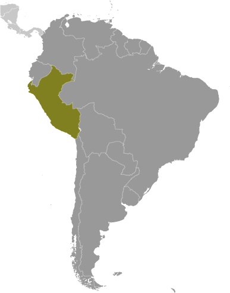
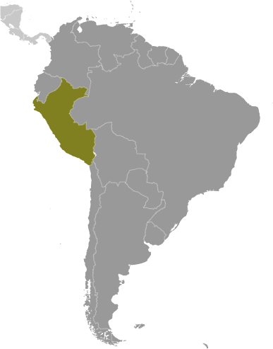

South America :: PERU
Introduction :: PERU
-
Ancient Peru was the seat of several prominent Andean civilizations, most notably that of the Incas whose empire was captured by Spanish conquistadors in 1533. Peru declared its independence in 1821, and remaining Spanish forces were defeated in 1824. After a dozen years of military rule, Peru returned to democratic leadership in 1980, but experienced economic problems and the growth of a violent insurgency. President Alberto FUJIMORI's election in 1990 ushered in a decade that saw a dramatic turnaround in the economy and significant progress in curtailing guerrilla activity. Nevertheless, the president's increasing reliance on authoritarian measures and an economic slump in the late 1990s generated mounting dissatisfaction with his regime, which led to his resignation in 2000. A caretaker government oversaw a new election in the spring of 2001, which installed Alejandro TOLEDO Manrique as the new head of government - Peru's first democratically elected president of indigenous ethnicity. The presidential election of 2006 saw the return of Alan GARCIA Perez who, after a disappointing presidential term from 1985 to 1990, oversaw a robust economic rebound. Former army officer Ollanta HUMALA Tasso was elected president in June 2011, and carried on the sound, market-oriented economic policies of the three preceding administrations. Poverty and unemployment levels have fallen dramatically in the last decade, and today Peru boasts one of the best performing economies in Latin America. Pedro Pablo KUCZYNSKI Godard won a very narrow presidential runoff election in June 2016.
Geography :: PERU
-
Western South America, bordering the South Pacific Ocean, between Chile and Ecuador10 00 S, 76 00 WSouth Americatotal: 1,285,216 sq kmland: 1,279,996 sq kmwater: 5,220 sq kmcountry comparison to the world: 21almost twice the size of Texas; slightly smaller than Alaskatotal: 7,062 kmborder countries (5): Bolivia 1,212 km, Brazil 2,659 km, Chile 168 km, Colombia 1,494 km, Ecuador 1,529 km2,414 kmterritorial sea: 200 nmcontinental shelf: 200 nmvaries from tropical in east to dry desert in west; temperate to frigid in Andeswestern coastal plain (costa), high and rugged Andes in center (sierra), eastern lowland jungle of Amazon Basin (selva)mean elevation: 1,555 melevation extremes: lowest point: Pacific Ocean 0 mhighest point: Nevado Huascaran 6,746 mcopper, silver, gold, petroleum, timber, fish, iron ore, coal, phosphate, potash, hydropower, natural gasagricultural land: 18.8%arable land 3.1%; permanent crops 1.1%; permanent pasture 14.6%forest: 53%other: 28.2% (2011 est.)25,800 sq km (2012)approximately one-third of the population resides along the desert coastal belt in the west, with a strong focus on the capital city of Lima; the Andean highlands, or sierra, which is strongly identified with the country's Amerindian population, contains roughly half of the overall population; the eastern slopes of the Andes, and adjoining rainforest, are sparsely populatedearthquakes, tsunamis, flooding, landslides, mild volcanic activityvolcanism: volcanic activity in the Andes Mountains; Ubinas (5,672 m), which last erupted in 2009, is the country's most active volcano; other historically active volcanoes include El Misti, Huaynaputina, Sabancaya, and Yucamanedeforestation (some the result of illegal logging); overgrazing of the slopes of the costa and sierra leading to soil erosion; desertification; air pollution in Lima; pollution of rivers and coastal waters from municipal and mining wastesparty to: Antarctic-Environmental Protocol, Antarctic-Marine Living Resources, Antarctic Treaty, Biodiversity, Climate Change, Climate Change-Kyoto Protocol, Desertification, Endangered Species, Hazardous Wastes, Marine Dumping, Ozone Layer Protection, Ship Pollution, Tropical Timber 83, Tropical Timber 94, Wetlands, Whalingsigned, but not ratified: none of the selected agreementsshares control of Lago Titicaca, world's highest navigable lake, with Bolivia; a remote slope of Nevado Mismi, a 5,316 m peak, is the ultimate source of the Amazon River
People and Society :: PERU
-
31,036,656 (July 2017 est.)country comparison to the world: 43noun: Peruvian(s)adjective: PeruvianAmerindian 45%, mestizo (mixed Amerindian and white) 37%, white 15%, black, Japanese, Chinese, and other 3%Spanish (official) 84.1%, Quechua (official) 13%, Aymara (official) 1.7%, Ashaninka 0.3%, other native languages (includes a large number of minor Amazonian languages) 0.7%, other (includes foreign languages and sign language) 0.2% (2007 est.)Roman Catholic 81.3%, Evangelical 12.5%, other 3.3%, none 2.9% (2007 est.)Peru's urban and coastal communities have benefited much more from recent economic growth than rural, Afro-Peruvian, indigenous, and poor populations of the Amazon and mountain regions. The poverty rate has dropped substantially during the last decade but remains stubbornly high at about 30% (more than 55% in rural areas). After remaining almost static for about a decade, Peru's malnutrition rate began falling in 2005, when the government introduced a coordinated strategy focusing on hygiene, sanitation, and clean water. School enrollment has improved, but achievement scores reflect ongoing problems with educational quality. Many poor children temporarily or permanently drop out of school to help support their families. About a quarter to a third of Peruvian children aged 6 to 14 work, often putting in long hours at hazardous mining or construction sites.Peru was a country of immigration in the 19th and early 20th centuries, but has become a country of emigration in the last few decades. Beginning in the 19th century, Peru brought in Asian contract laborers mainly to work on coastal plantations. Populations of Chinese and Japanese descent - among the largest in Latin America - are economically and culturally influential in Peru today. Peruvian emigration began rising in the 1980s due to an economic crisis and a violent internal conflict, but outflows have stabilized in the last few years as economic conditions have improved. Nonetheless, more than 2 million Peruvians have emigrated in the last decade, principally to the US, Spain, and Argentina.0-14 years: 26.31% (male 4,155,672/female 4,009,888)15-24 years: 18.31% (male 2,847,460/female 2,835,727)25-54 years: 40.19% (male 5,985,354/female 6,487,232)55-64 years: 7.78% (male 1,168,533/female 1,247,299)65 years and over: 7.41% (male 1,086,790/female 1,212,701) (2017 est.)total dependency ratio: 53.2youth dependency ratio: 42.7elderly dependency ratio: 10.5potential support ratio: 9.6 (2015 est.)total: 28 yearsmale: 27.2 yearsfemale: 28.8 years (2017 est.)country comparison to the world: 1390.95% (2017 est.)country comparison to the world: 11117.8 births/1,000 population (2017 est.)country comparison to the world: 1036.1 deaths/1,000 population (2017 est.)country comparison to the world: 157-2.2 migrant(s)/1,000 population (2017 est.)country comparison to the world: 167approximately one-third of the population resides along the desert coastal belt in the west, with a strong focus on the capital city of Lima; the Andean highlands, or sierra, which is strongly identified with the country's Amerindian population, contains roughly half of the overall population; the eastern slopes of the Andes, and adjoining rainforest, are sparsely populatedurban population: 79.2% of total population (2017)rate of urbanization: 1.57% annual rate of change (2015-20 est.)LIMA (capital) 9.897 million; Arequipa 850,000; Trujillo 798,000 (2015)at birth: 1.05 male(s)/female0-14 years: 1.04 male(s)/female15-24 years: 1 male(s)/female25-54 years: 0.92 male(s)/female55-64 years: 0.94 male(s)/female65 years and over: 0.9 male(s)/femaletotal population: 0.97 male(s)/female (2016 est.)22.2 yearsnote: median age at first birth among women 25-29 (2013 est.)68 deaths/100,000 live births (2015 est.)country comparison to the world: 83total: 18.4 deaths/1,000 live birthsmale: 20.5 deaths/1,000 live birthsfemale: 16.2 deaths/1,000 live births (2017 est.)country comparison to the world: 88total population: 74 yearsmale: 71.9 yearsfemale: 76.1 years (2017 est.)country comparison to the world: 1262.12 children born/woman (2017 est.)country comparison to the world: 10274.6% (2014)5.5% of GDP (2014)country comparison to the world: 1281.12 physicians/1,000 population (2012)1.5 beds/1,000 population (2012)improved:urban: 91.4% of populationrural: 69.2% of populationtotal: 86.7% of populationunimproved:urban: 8.6% of populationrural: 30.8% of populationtotal: 13.3% of population (2015 est.)improved:urban: 82.5% of populationrural: 53.2% of populationtotal: 76.2% of populationunimproved:urban: 17.5% of populationrural: 46.8% of populationtotal: 23.8% of population (2015 est.)0.3% (2016 est.)country comparison to the world: 8470,000 (2016 est.)country comparison to the world: 482,200 (2016 est.)country comparison to the world: 51degree of risk: very highfood or waterborne diseases: bacterial diarrhea, hepatitis A, and typhoid fevervectorborne disease: dengue fever, malaria, and Bartonellosis (Oroya fever)note: active local transmission of Zika virus by Aedes species mosquitoes has been identified in this country (as of August 2016); it poses an important risk (a large number of cases possible) among US citizens if bitten by an infective mosquito; other less common ways to get Zika are through sex, via blood transfusion, or during pregnancy, in which the pregnant woman passes Zika virus to her fetus (2016)19.7% (2016)country comparison to the world: 1093.1% (2014)country comparison to the world: 1033.9% of GDP (2015)country comparison to the world: 145definition: age 15 and over can read and writetotal population: 94.2%male: 97.2%female: 94.3% (2016 est.)total: 13 yearsmale: 13 yearsfemale: 14 years (2010)total: 14.7%male: 8.6%female: 8.2% (2015 est.)country comparison to the world: 101
Government :: PERU
-
conventional long form: Republic of Peruconventional short form: Perulocal long form: Republica del Perulocal short form: Peruetymology: exact meaning is obscure, but the name may derive from a native word "biru" meaning "river"presidential republicname: Limageographic coordinates: 12 03 S, 77 03 Wtime difference: UTC-5 (same time as Washington, DC, during Standard Time)25 regions (regiones, singular - region) and 1 province* (provincia); Amazonas, Ancash, Apurimac, Arequipa, Ayacucho, Cajamarca, Callao, Cusco, Huancavelica, Huanuco, Ica, Junin, La Libertad, Lambayeque, Lima, Lima*, Loreto, Madre de Dios, Moquegua, Pasco, Piura, Puno, San Martin, Tacna, Tumbes, Ucayalinote: Callao, the largest port in Peru, is also referred to as a constitutional province, the only province of the Callao region28 July 1821 (from Spain)Independence Day, 28-29 July (1821)several previous; latest promulgated 29 December 1993, enacted 31 December 1993; amended several times, last in 2015 (2016)civil law systemaccepts compulsory ICJ jurisdiction with reservations; accepts ICCt jurisdictioncitizenship by birth: yescitizenship by descent: yesdual citizenship recognized: yesresidency requirement for naturalization: 2 years18 years of age; universal and compulsory until the age of 70chief of state: President Pedro Pablo KUCZYNSKI Godard (since 28 July 2016); First Vice President Martin Alberto VIZCARRA Cornejo (since 28 July 2016); Second Vice President Mercedes Rosalba ARAOZ Fernandez (since 28 July 2016); note - the president is both chief of state and head of governmenthead of government: President Pedro Pablo KUCZYNSKI Godard (since 28 July 2016); First Vice President Martin Alberto VIZCARRA Cornejo (since 28 July 2016); Second Vice President Mercedes Rosalba ARAOZ Fernandez (since 28 July 2016)cabinet: Council of Ministers appointed by the presidentelections/appointments: president directly elected by absolute majority popular vote in 2 rounds if needed for a 5-year term (eligible for nonconsecutive terms); election last held on 10 April 2016 with runoff on 5 June 2016 (next to be held in April 2021)election results: Pedro Pablo KUCZYNSKI Godard elected president in second round; percent of vote in first round - Keiko FUJIMORI Higuchi (Fuerza Popular) 39.9%, Pedro Pablo KUCZYNSKI Godard (Peruanos Por el Kambio) 21.1%, Veronika MENDOZA (Broad Front) 18.7%, Alfredo BARNECHEA (Popular Action) 7%, Alan GARCIA (APRA) 5.8%, other 7.5%; percent of vote in second round - Pedro Pablo KUCZYNSKI Godard 50.1%, Keiko FUJIMORI Higuchi 49.9%note: Prime Minister Mercedes Rosalba ARAOZ Fernandez (since 17 September 2017) does not exercise executive power; this power rests with the presidentdescription: unicameral Congress of the Republic of Peru or Congreso de la Republica del Peru (130 seats; members directly elected in multi-seat constituencies by closed party-list proportional representation vote to serve 5-year terms)elections: last held on 10 April 2016 with run-off election on 6 June 2016 (next to be held in April 2021)election results: percent of vote by party/coalition - Fuerza Popular 36.3%, PPK 16.5%, Frente Amplio 13.9%, APP 9.2%; APRA 8.3%; AP 7.2%, other 8.6%; seats by party/coalition - Fuerza Popular 73, Frente Amplio 20, PPK 18, APP 9; APRA 5; AP 5highest court(s): Supreme Court (consists of 16 judges and divided into civil, criminal, and constitutional-social sectors)judge selection and term of office: justices proposed by the National Council of the Judiciary or National Judicial Council (a 7-member independent body), nominated by the president, and confirmed by the Congress (all appointments reviewed by the Council every 7 years); justices appointed for life or until age 70subordinate courts: Court of Constitutional Guarantees; Superior Courts or Cortes Superiores; specialized civil, criminal, and mixed courts; 2 types of peace courts in which professional judges and selected members of the local communities presideAlliance for Progress (Alianza para el Progreso) or APP [Cesar ACUNA Peralta]American Popular Revolutionary Alliance or APRABroad Front (Frente Amplio; also known as El Frente Amplio por Justicia, Vida y Libertad) (coalition includes Nuevo Peru [Veronika Mendoza], Tierra y Libertad [Marco ARANA Zegarra], and Fuerza Social [Susana VILLARAN de la Puente]Fuerza Popular (formerly Fuerza 2011) [Keiko FUJIMORI Higuchi]National Solidarity (Solidaridad Nacional) or SN [Luis CASTANEDA Lossio]Peru Posible or PP (coalition includes Accion Popular and Somos Peru) [Alejandro TOLEDO Manrique]Peruvian Aprista Party (Partido Aprista Peruano) or PAP [Javier VELASQUEZ Quesquen] (also referred to by its original name Alianza Popular Revolucionaria Americana or APRA)Peruvian Nationalist Party [Ollanta HUMALA]Peruvians for Change (Peruanos Por el Kambio) or PPK [Pedro Pablo KUCZYNSKI]Popular Action (Accion Popular) or AP [Mesias GUEVARA Amasifuen]Popular Christian Party (Partido Popular Cristiano) or PPC [Lourdes FLORES Nano]General Workers Confederation of Peru (Confederacion General de Trabajadores del Peru) or CGTP [Geronimo LOPEZ]Shining Path (Sendero Luminoso) or SL [Abimael GUZMAN Reynoso - imprisoned), Jorge and Victor QUISPE Palomino - indicted in US] (communist guerrilla group)APEC, BIS, CAN, CD, CELAC, EITI (compliant country), FAO, G-24, G-77, IADB, IAEA, IBRD, ICAO, ICC (NGOs), ICCt, ICRM, IDA, IFAD, IFC, IFRCS, IHO, ILO, IMF, IMO, IMSO, Interpol, IOC, IOM, IPU, ISO, ITSO, ITU, ITUC (NGOs), LAES, LAIA, Mercosur (associate), MIGA, MINUSTAH, MONUSCO, NAM, OAS, OPANAL, OPCW, Pacific Alliance, PCA, SICA (observer), UN, UNAMID, UNASUR, UNCTAD, UNESCO, UNHCR, UNIDO, Union Latina, UNISFA, UNMISS, UNOCI, UNWTO, UPU, WCO, WFTU (NGOs), WHO, WIPO, WMO, WTOchief of mission: Ambassador Carlos Jose PAREJA Rios (since 16 September 2016)chancery: 1700 Massachusetts Avenue NW, Washington, DC 20036telephone: [1] (202) 833-9860 through 9869FAX: [1] (202) 659-8124consulate(s) general: Atlanta, Boston, Chicago, Dallas, Denver, Hartford (CT), Houston, Los Angeles, Miami, New York, Paterson (NJ), San Francisco, Washington DCchief of mission: Ambassador (vacant); Charge d'Affaires Mark WELLS (since 13 October 2017)embassy: Avenida La Encalada, Cuadra 17 s/n, Surco, Lima 33mailing address: P. O. Box 1995, Lima 1; American Embassy (Lima), APO AA 34031-5000telephone: [51] (1) 618-2000FAX: [51] (1) 618-2397three equal, vertical bands of red (hoist side), white, and red with the coat of arms centered in the white band; the coat of arms features a shield bearing a vicuna (representing fauna), a cinchona tree (the source of quinine, signifying flora), and a yellow cornucopia spilling out coins (denoting mineral wealth); red recalls blood shed for independence, white symbolizes peacevicuna (a camelid related to the llama); national colors: red, whitename: "Himno Nacional del Peru" (National Anthem of Peru)lyrics/music: Jose DE LA TORRE Ugarte/Jose Bernardo ALZEDOnote: adopted 1822; the song won a national anthem contest
Economy :: PERU
-
Peru's economy reflects its varied topography - an arid lowland coastal region, the central high sierra of the Andes, and the dense forest of the Amazon. A wide range of important mineral resources are found in the mountainous and coastal areas, and Peru's coastal waters provide excellent fishing grounds. Peru is the world's second largest producer of silver and copper.The Peruvian economy grew by an average of 5.6% per year from 2009-13 with a stable exchange rate and low inflation, which in 2013 was just below the upper limit of the Central Bank target range of 1% to 3%. This growth was due partly to high international prices for Peru's metals and minerals exports, which account for 55% of the country's total exports. Growth slipped from 2014 to 2016, due to weaker world prices for these resources. Despite Peru's strong macroeconomic performance, dependence on minerals and metals exports and imported foodstuffs makes the economy vulnerable to fluctuations in world prices.Peru's rapid expansion coupled with cash transfers and other programs have helped to reduce the national poverty rate by over 35 percentage points since 2004, but inequality persists and continued to pose a challenge for the Ollanta HUMALA administration, which championed a policy of social inclusion and a more equitable distribution of income. Poor infrastructure hinders the spread of growth to Peru's non-coastal areas. The HUMALA administration passed several economic stimulus packages in 2014 to bolster growth, including reforms to environmental regulations in order to spur investment in Peru’s lucrative mining sector, a move that was opposed by some environmental groups. However, in 2015, mining investment fell as global commodity prices remained low and social conflicts plagued the sector.Peru's free trade policy continued under the HUMALA administration; since 2006, Peru has signed trade deals with the US, Canada, Singapore, China, Korea, Mexico, Japan, the EU, the European Free Trade Association, Chile, Thailand, Costa Rica, Panama, Venezuela, Honduras, concluded negotiations with Guatemala and the Trans-Pacific Partnership, and begun trade talks with El Salvador, India, and Turkey. Peru also has signed a trade pact with Chile, Colombia, and Mexico, called the Pacific Alliance, that seeks integration of services, capital, investment and movement of people. Since the US-Peru Trade Promotion Agreement entered into force in February 2009, total trade between Peru and the US has doubled. President Pedro Pablo KUCZYNSKI succeeded HUMALA in July 2016 and is focusing on economic reforms and free market policies aimed at boosting investment in Peru. Mining output increased significantly in 2016, which helped Peru attain one of the highest GDP growth rates in Latin America, and Peru should maintain strong growth in 2017. However, 2016 economic performance fell short of initial projections depressed by delays in infrastructure mega-projects and the start of a corruption scandal associated with a Brazilian firm, which have lowered 2017 growth estimates. Massive flooding in early 2017 may also be a drag on growth, offset somewhat by additional public spending aimed at recovery efforts.$406.5 billion (2016 est.)$386 billion (2015 est.)$369.6 billion (2014 est.)note: data are in 2016 dollarscountry comparison to the world: 48$195.3 billion (2016 est.)4% (2016 est.)3.3% (2015 est.)2.4% (2014 est.)country comparison to the world: 70$12,900 (2016 est.)$12,500 (2015 est.)$12,300 (2014 est.)note: data are in 2016 dollarscountry comparison to the world: 11920.1% of GDP (2016 est.)19.7% of GDP (2015 est.)20.5% of GDP (2014 est.)country comparison to the world: 95household consumption: 65.2%government consumption: 12.1%investment in fixed capital: 22.6%investment in inventories: 0.2%exports of goods and services: 22.2%imports of goods and services: -22.2% (2016 est.)agriculture: 7.6%industry: 34.7%services: 57.7% (2016 est.)artichokes, asparagus, avocados, blueberries, coffee, cocoa, cotton, sugarcane, rice, potatoes, corn, plantains, grapes, oranges, pineapples, guavas, bananas, apples, lemons, pears, coca, tomatoes, mangoes, barley, medicinal plants, quinoa, palm oil, marigolds, onions, wheat, dry beans; poultry, beef, pork, dairy products; guinea pigs; fishmining and refining of minerals; steel, metal fabrication; petroleum extraction and refining, natural gas and natural gas liquefaction; fishing and fish processing, cement, glass, textiles, clothing, food processing, beer, soft drinks, rubber, machinery, electrical machinery, chemicals, furniture9.6% (2016 est.)country comparison to the world: 1216.8 millionnote: individuals older than 14 years of age (2016 est.)country comparison to the world: 38agriculture: 25.8%industry: 17.4%services: 56.8% (2011)6.7% (2016 est.)6.5% (2015 est.)note: data are for metropolitan Lima; widespread underemploymentcountry comparison to the world: 8722.7% (2014 est.)lowest 10%: 1.4%highest 10%: 36.1% (2010 est.)45.3 (2012)51 (2005)country comparison to the world: 39revenues: $52.44 billionexpenditures: $57.48 billion (2016 est.)26.9% of GDP (2016 est.)country comparison to the world: 106-2.6% of GDP (2016 est.)country comparison to the world: 10623.8% of GDP (2016 est.)23.3% of GDP (2015 est.)note: data cover general government debt, and includes debt instruments issued by government entities other than the treasury; the data exclude treasury debt held by foreign entities; the data include debt issued by subnational entitiescountry comparison to the world: 177calendar year3.6% (2016 est.)3.5% (2015 est.)note: data are for metropolitan Lima, annual averagecountry comparison to the world: 1554.25% (31 December 2016 est.)5.05% (31 December 2012)country comparison to the world: 9316.47% (31 December 2016 est.)16.1% (31 December 2015 est.)note: domestic currency lending rate, 90 day maturitycountry comparison to the world: 30$31.08 billion (31 December 2016 est.)$29.59 billion (31 December 2015 est.)country comparison to the world: 62$84.84 billion (31 December 2016 est.)$74.02 billion (31 December 2015 est.)country comparison to the world: 57$52.8 billion (31 December 2016 est.)$49.47 billion (31 December 2015 est.)country comparison to the world: 64$56.56 billion (31 December 2015 est.)$78.84 billion (31 December 2014 est.)$80.98 billion (31 December 2013 est.)country comparison to the world: 47$-5.305 billion (2016 est.)$-9.169 billion (2015 est.)country comparison to the world: 176$37.02 billion (2016 est.)$34.41 billion (2015 est.)country comparison to the world: 52copper, gold, lead, zinc, tin, iron ore, molybdenum, silver; crude petroleum and petroleum products, natural gas; coffee, asparagus and other vegetables, fruit, apparel and textiles, fishmeal, fish, chemicals, fabricated metal products and machinery, alloysChina 23.5%, US 17.3%, Switzerland 7.1%, Canada 4.7% (2016)$35.13 billion (2016 est.)$37.33 billion (2015 est.)country comparison to the world: 59petroleum and petroleum products, chemicals, plastics, machinery, vehicles, TV sets, power shovels, front-end loaders, telephones and telecommunication equipment, iron and steel, wheat, corn, soybean products, paper, cotton, vaccines and medicinesChina 22.8%, US 20.2%, Brazil 5.8%, Mexico 4.5% (2016)$61.81 billion (31 December 2016 est.)$61.59 billion (31 December 2015 est.)country comparison to the world: 34$66.76 billion (31 December 2016 est.)$65.94 billion (31 December 2015 est.)country comparison to the world: 59$91.48 billion (31 December 2016 est.)$84.62 billion (31 December 2015 est.)country comparison to the world: 47$4.255 billion (31 December 2016 est.)$2.815 billion (31 December 2015 est.)country comparison to the world: 74nuevo sol (PEN) per US dollar -3.3751 (2016 est.)3.3751 (2015 est.)3.185 (2014 est.)2.8383 (2013 est.)2.64 (2012 est.)
Energy :: PERU
-
population without electricity: 2,900,000electrification - total population: 91%electrification - urban areas: 98%electrification - rural areas: 73% (2013)46.31 billion kWh (2015 est.)country comparison to the world: 5640.93 billion kWh (2015 est.)country comparison to the world: 5655 million kWh (2015 est.)country comparison to the world: 850 kWh (2016 est.)country comparison to the world: 18712.26 million kW (2015 est.)country comparison to the world: 5662.6% of total installed capacity (2015 est.)country comparison to the world: 1200% of total installed capacity (2015 est.)country comparison to the world: 16333.9% of total installed capacity (2015 est.)country comparison to the world: 614.3% of total installed capacity (2015 est.)country comparison to the world: 10240,270 bbl/day (2016 est.)country comparison to the world: 5915,560 bbl/day (2014 est.)country comparison to the world: 5583,660 bbl/day (2014 est.)country comparison to the world: 46473 million bbl (1 January 2017 es)country comparison to the world: 50187,200 bbl/day (2014 est.)country comparison to the world: 54240,000 bbl/day (2015 est.)country comparison to the world: 5166,650 bbl/day (2014 est.)country comparison to the world: 4952,880 bbl/day (2014 est.)country comparison to the world: 8112.62 billion cu m (2015 est.)country comparison to the world: 3710.88 billion cu m (2015 est.)country comparison to the world: 534.83 billion cu m (2015 est.)country comparison to the world: 330 cu m (2013 est.)country comparison to the world: 174399 billion cu m (1 January 2017 es)country comparison to the world: 3541 million Mt (2013 est.)country comparison to the world: 68
Communications :: PERU
-
total subscriptions: 3,074,464subscriptions per 100 inhabitants: 10 (July 2016 est.)country comparison to the world: 48total: 36,933,161subscriptions per 100 inhabitants: 120 (July 2016 est.)country comparison to the world: 38general assessment: adequate for most requirements; nationwide microwave radio relay system and a domestic satellite system with 12 earth stationsdomestic: fixed-line teledensity is only about 10 per 100 persons; mobile-cellular teledensity, spurred by competition among multiple providers, now 120 telephones per 100 personsinternational: country code - 51; the South America-1 (SAM-1) and Pan American (PAN-AM) submarine cable systems provide links to parts of Central and South America, the Caribbean, and US; satellite earth stations - 2 Intelsat (Atlantic Ocean) (2016)10 major TV networks of which only one, Television Nacional de Peru, is state owned; multi-channel cable TV services are available; in excess of 2,000 radio stations including a substantial number of indigenous language stations (2010).petotal: 13,975,422percent of population: 45.5% (July 2016 est.)country comparison to the world: 39
Transportation :: PERU
-
number of registered air carriers: 7inventory of registered aircraft operated by air carriers: 35annual passenger traffic on registered air carriers: 13,907,948annual freight traffic on registered air carriers: 223,643,434 mt-km (2015)OB (2016)191 (2013)country comparison to the world: 30total: 59over 3,047 m: 52,438 to 3,047 m: 211,524 to 2,437 m: 16914 to 1,523 m: 12under 914 m: 5 (2017)total: 1322,438 to 3,047 m: 11,524 to 2,437 m: 19914 to 1,523 m: 30under 914 m: 82 (2013)5 (2013)extra heavy crude 786 km; gas 1,526 km; liquid petroleum gas 679 km; oil 1,033 km; refined products 15 km (2013)total: 1,854.4 kmstandard gauge: 1,730.4 km 1.435-m gauge (34 km electrified)narrow gauge: 124 km 0.914-m gauge (2014)country comparison to the world: 74total: 140,672 km (18,699 km paved)note: includes 24,593 km of national roads (14,748 km paved), 24,235 km of departmental roads (2,340 km paved), and 91,844 km of local roads (1,611 km paved) (2012)country comparison to the world: 368,808 km (8,600 km of navigable tributaries on the Amazon River system and 208 km on Lago Titicaca) (2011)country comparison to the world: 14total: 22by type: cargo 2, chemical tanker 5, liquefied gas 2, petroleum tanker 13foreign-owned: 8 (Chile 6, Ecuador 1, Spain 1)registered in other countries: 9 (Panama 9) (2010)country comparison to the world: 92major seaport(s): Callao, Matarani, Paitariver port(s): Iquitos, Pucallpa, Yurimaguas (Amazon)oil terminal(s): Conchan oil terminal, La Pampilla oil terminalcontainer port(s) (TEUs): Callao (1,616,365)
Military and Security :: PERU
-
1.29% of GDP (2016)1.69% of GDP (2015)1.46% of GDP (2014)1.47% of GDP (2013)1.33% of GDP (2012)country comparison to the world: 78Peruvian Army (Ejercito Peruano), Peruvian Navy (Marina de Guerra del Peru, MGP, includes naval air, naval infantry, and Coast Guard), Air Force of Peru (Fuerza Aerea del Peru, FAP) (2013)18-50 years of age for male and 18-45 years of age for female voluntary military service; no conscription (2012)the International Maritime Bureau reports the territorial waters of Peru are a risk for armed robbery against ships; in 2016, 11 attacks against commercial vessels were reported up from none in 2015; most of these occured in the main port of Callao
Transnational Issues :: PERU
-
Chile and Ecuador rejected Peru's November 2005 unilateral legislation to shift the axis of their joint treaty-defined maritime boundaries along the parallels of latitude to equidistance lines which favor Peru; organized illegal narcotics operations in Colombia have penetrated Peru's shared border; Peru rejects Bolivia's claim to restore maritime access through a sovereign corridor through Chile along the Peruvian borderIDPs: 62,000 (civil war from 1980-2000; most IDPs are indigenous peasants in Andean and Amazonian regions; as of 2011, no new information on the situation of these IDPs) (2016)until 1996 the world's largest coca leaf producer, Peru is now the world's second largest producer of coca leaf, though it lags far behind Colombia; cultivation of coca in Peru was estimated at 53,000 hectares in 2015, an increase of 14 per cent over 2014; second largest producer of cocaine, estimated at 380 metric tons of potential pure cocaine in 2015; finished cocaine is shipped out from Pacific ports to the international drug market; increasing amounts of base and finished cocaine, however, are being moved to Brazil, Chile, Argentina, and Bolivia for use in the Southern Cone or transshipment to Europe and Africa; increasing domestic drug consumption